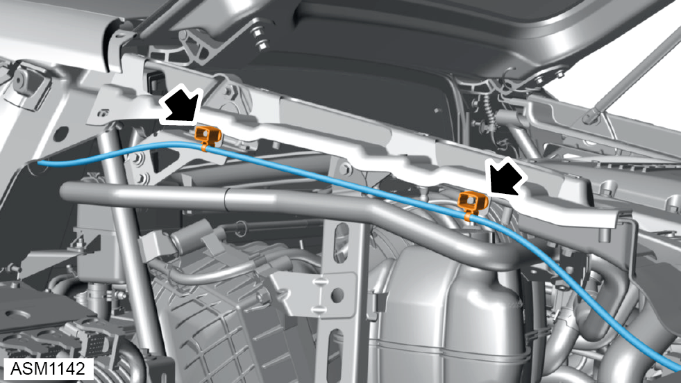
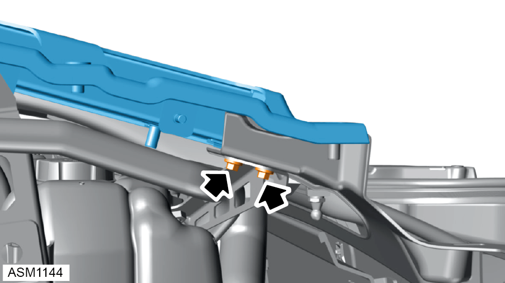
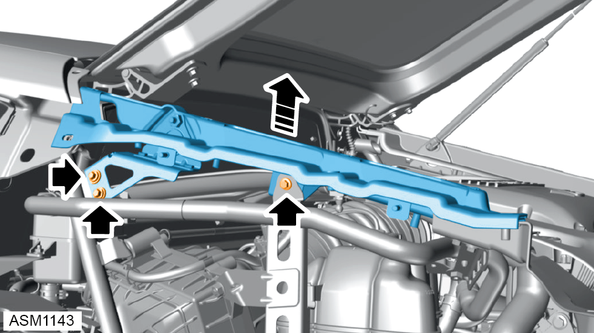

C Pillar - Left Side
Print
Operation Code: 10.01.31-02
Removal
- Remove tailgate strut. Refer to procedure.
- Remove trim cover rear quarter left side. Refer to procedure.
- Remove rear fender left side. Refer to procedure.

- Disengage harness clips (x2) securing tailgate manual release cable to C pillar.

- Remove M6x16 bolts (x2) securing C pillar to boot box upper. Torque 10 Nm.

- Remove M6x16 bolts (x3) and washers (x2) securing C pillar to rear frame and expansion tank mounting. Torque 10 Nm.
NOTE: Always record quantity and
fitted position of washers.
- Remove C pillar.
Installation
- Installation is the reverse of removal procedure.